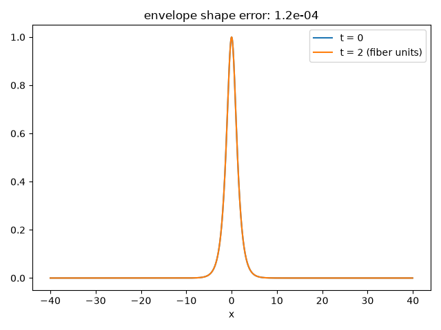

Note
Go to the end to download the full example code.
A dispersion-free optical soliton#
Akira Hasegawa and Fred Tappert showed in 1973 that the same balance of nonlinearity and dispersion behind Russell’s water wave – now governed by the focusing nonlinear Schrodinger equation instead of KdV,
– lets light pulses in an optical fiber propagate as solitons,
self-correcting against the pulse-spreading dispersion that otherwise
limits every long-distance optical line.
nls_bright_soliton() constructs the
exact envelope solution,
and nls_evolve() propagates it via
split-step Fourier integration (here at rest, \(v=0\), amplitude
\(A=1\)), showing the envelope \(|\psi|\) is unchanged after
“fiber” propagation where an ordinary pulse would visibly spread; the
same run can be watched frame by frame with
nls_evolve_frames().
import matplotlib.pyplot as plt
import numpy as np
from physicskit.fields import animate_field_1d, nls_bright_soliton, nls_evolve, nls_evolve_frames, plot_field_1d
A fiber-optic bright soliton (focusing NLS: g > 0)#
N, L = 1024, 80.0
x = np.linspace(-L / 2, L / 2, N, endpoint=False)
psi0 = nls_bright_soliton(x, t=0.0, A=1.0)
Propagate it down 2000 dt of “fiber”#
psi = nls_evolve(psi0, x, dt=0.001, steps=2000, g=1.0)
Nonlinearity (self-phase modulation) exactly cancels dispersion: the envelope \(|\psi(x,t)|\) is unchanged, unlike an ordinary pulse governed by dispersion alone.
shape_error = np.max(np.abs(np.abs(psi) - np.abs(psi0)))
fig, ax = plot_field_1d(x, np.abs(psi0), label="t = 0")
plot_field_1d(x, np.abs(psi), ax=ax, label="t = 2 (fiber units)")
ax.set_title(f"envelope shape error: {shape_error:.1e}")
fig.tight_layout()
print(f"envelope |psi| shape error after propagation: {shape_error:.2e}")
print(f"peak envelope amplitude: t=0 -> {np.abs(psi0).max():.4f}, after -> {np.abs(psi).max():.4f}")

envelope |psi| shape error after propagation: 1.18e-04
peak envelope amplitude: t=0 -> 1.0000, after -> 0.9999
Animating the dispersion-free envelope#
nls_evolve_frames() records the same
propagation as a sequence of snapshots, showing the shape-preserving
envelope travel down the “fiber” rather than comparing only two instants.
frames, times = nls_evolve_frames(psi0, x, dt=0.001, steps_per_frame=50, n_frames=40, g=1.0)
anim = animate_field_1d(x, frames, times, ylabel="|psi(x, t)|")
plt.show()
To save the animation to a file instead of (or in addition to) displaying it interactively, use e.g.:
anim.save("nls_optical_soliton.gif", writer="pillow", fps=20)
Check#
The bright soliton’s envelope is unchanged by propagation.
assert shape_error < 1e-3 and abs(np.abs(psi).max() - 1) < 1e-3
Total running time of the script: (0 minutes 9.305 seconds)